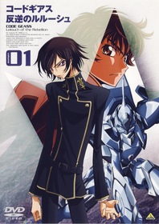

Аниме изменившие жанр
Можно говорить что угодно, но реальность такова, что DB является одним из самых больших и самых легендарных аниме, изменивших отрасль.
ВСЕ сериалы жанра Сёнэн были вдохновлены DB. Это просто факт, и с этим очень сложно поспорить. Не говоря уже о том, что DB- это франшиза на миллиарды долларов.
Death Note
Аниме, выпущенное в 2006-2007 годах студией Madhouse, и состоящее из 37 эпизодов. Аниме основано на безумно популярной в Японии (да и по всему миру) манге, также по вселенной Death Note были выпущены три фильма, два полнометражных аниме, ранобэ и несколько игр, рассчитанных на платформу Nintendo DS. Причем сюжет аниме-сериала почти полностью соответствует сюжету манги, чего нельзя сказать про фильмы. Полнометражные аниме представляют собой компиляцию аниме-сериала с несколькими дополнительными эпизодами, и будут интересны только самым преданным фанатам.
Вся манга была официально переведена на русский язык, так что купить себе томик манги на русском вполне реально (всего их двенадцать). В России лицензией на Death Note обладает компания “Мега-Аниме”, и надо признать, что их локализация получилась вполне неплохой, голоса близки к оригинальным.
Код Гиас

Аниме, после просмотра которого у зрителя останется много вопросов обо всех интригах и ключевых моментах, ведь эта глубокая и философская картина заставляет самостоятельно искать все перипетии сюжета. Политика, кровные потасовки, всяческие “скелеты в шкафу” непременно найдут своего ценителя.
По сюжету отображается некое будущее в котором Британская империя захватывает Японию и навязывает свои правила существования. Главный герой - студент по имени Лелуш во время одной из потасовок получает магическую силу под названием “Гиасс”, с помощью которой он мог подчинить любого человека. Эту силу британский студент использует для уничтожения Британской империи, которую возглавляет его собственный жестокий отец.
Naruto
Много людей досматривали этот тайтл до последней серии, а некоторые прекращали просмотр не дойдя до трехсотой, ввиду затянутости сюжета. Однако даже те кто далёк от мира аниме знают о светловолосом мальчике, который мечтал стать Хокаге.
Этот аниме сериал учит добиваться поставленных целей, быть неравнодушным даже к малознакомым людям, а главное - ценить дружбу, какой бы она не была. История завязанная вокруг трех главных героев - Саске, Сакуры и Наруто детально раскрывает каждого персонажа встречающегося на протяжении всей их истории.
Это целая вселенная в которой ниндзя со сверхспособностями отстаивают честь своих деревень, сражаясь в эпических баталиях и все это переплетается с любовными историями, шутками и неожиданными поступками людей. С каждым сезоном рисовка становится серьезнее, герои получают жизненный опыт а вместе с ними и зрители.
Для новичков в мире аниме Наруто станет настоящим путеводителем, а для тех кто знаком с этой франшизой никогда не будет лишним снова пересмотреть ее и переосмыслить некоторые моменты заново.Невероятные приключения ДжоДжо

JoJo's Bizarre Adventure (яп. ジョジョの奇妙な冒険 Дзёдзё но кимё:на бо:кэн, «Невероятные приключения ДжоДжо») — серия выпусков манги, автором и иллюстратором которой является Хирохико Араки. С 1987 по 2004 год серия публиковалась в журнале Weekly Shonen Jump, затем выпуск глав был перенесён в ежемесячный сэйнэн-журнал Ultra Jump[⇨]. JoJo’s Bizarre Adventure является второй в числе крупнейших серий манги издательства Shueisha и включает в себя 131 том, уступая лишь Kochikame, состоящей из 200 томов.
История восьми частей манги разворачивается вокруг приключений Джонатана Джостара и его потомков: каждая часть представляет читателю отдельную историю и нового героя, способного применять в бою сверхъестественные способности. В манге также описаны события, происходящие в параллельной вселенной мира ДжоДжо — 7 и 8 части